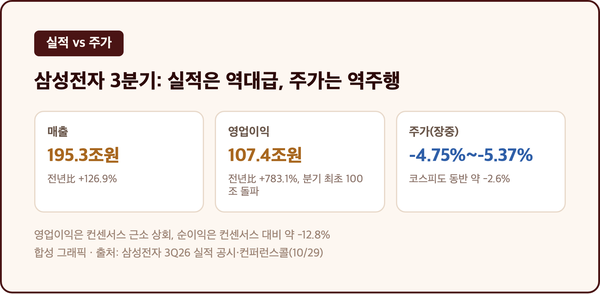
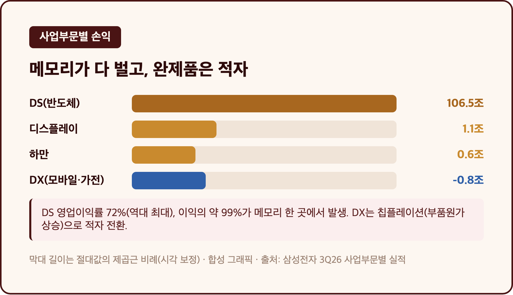
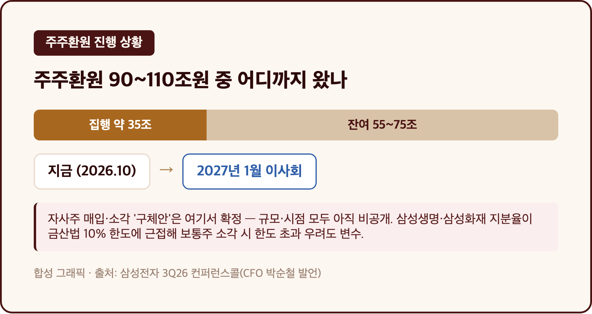
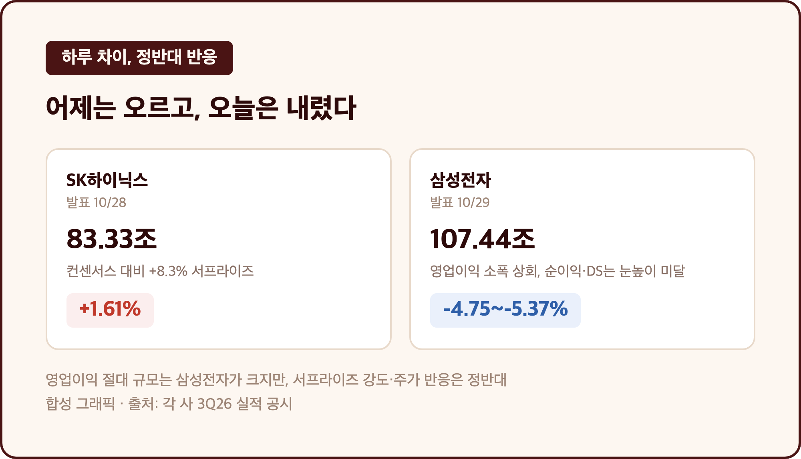
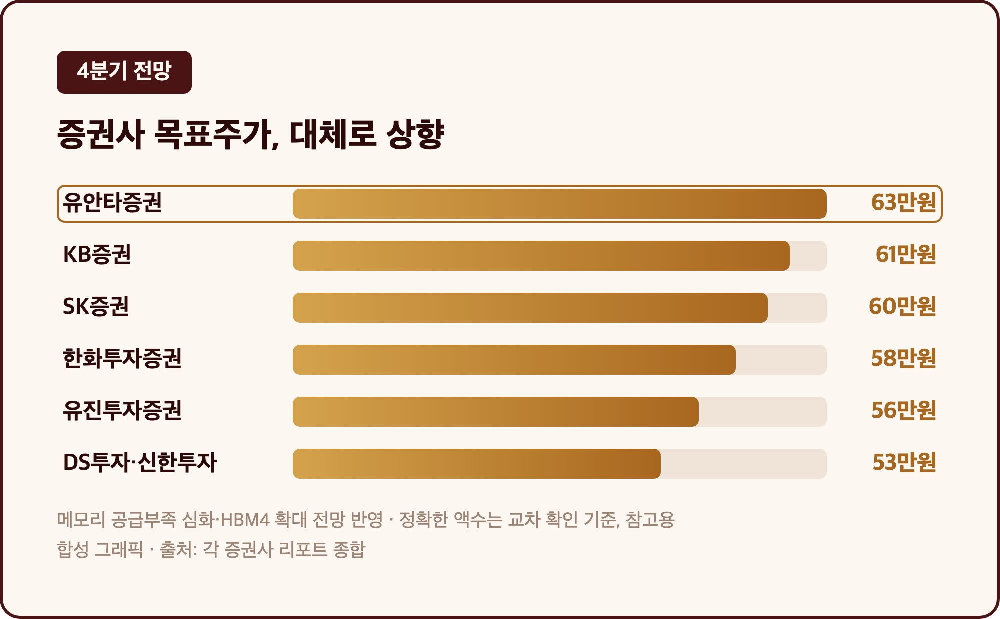

역대 최대 실적인데 주가는 급락. 오늘 삼성전자가 딱 이랬습니다. 저도 물려있는 종목이라 이 반전이 더 아프게 느껴지네요.
오늘(10/29, 목) 오전에 삼성전자 3분기 확정실적이 나왔고, 10시에 컨퍼런스콜도 열렸어요. 숫자만 보면 박수칠 일인데, 정작 주가는 장중 한때 상승하다가 발표 후 거꾸로 꺾였습니다. 왜 이런 일이 벌어졌는지 하나씩 정리해볼게요.
🔄 영업이익 107조 넘었는데 주가는 -5%대 – 삼성전자 3분기의 역설
매출 195조 2,532억원 (+126.9%) / 영업이익 107조 4,405억원 (+783.1%, 분기 최초 100조 돌파) / 주가 장중 -4.75%~-5.37% (한때 -6%대) |

| 항목 | 수치 | 비교 |
| 매출 | 195조 2,532억원 | 전년 동기比 +126.9% |
| 영업이익 | 107조 4,405억원 | 전년 동기比 +783.1%, 분기 최초 100조 돌파 |
| 순이익 | 75조 1,000억원 | 컨센서스 86조 1,300억원 대비 약 -12.8% |
| 주가(장중) | -4.75%~-5.37% (한때 -6%대) | 코스피도 동반 약 -2.6% |
영업이익만 보면 글로벌 테크 기업 중 최초로 분기 100조원을 넘긴 기록이에요. 그런데 장 초반 +2.89%까지 올랐던 주가가 컨퍼런스콜 이후로는 방향을 완전히 틀었습니다. 뜯어보면 이유가 있더라고요. 영업이익은 컨센서스(105조~107조원대, 집계 시점에 따라 조금씩 다르게 보도됨)를 근소하게 넘겼지만, 순이익은 시장 예상치를 12.8%나 밑돌았고, 반도체(DS) 영업이익도 시장이 기대했던 110조원 안팎에는 못 미쳤다는 평가가 나왔어요. "숫자는 사상 최대, 눈높이는 못 넘음" — 이 간극이 오늘 주가를 설명하는 핵심이었던 셈이에요. 저는 삼성전자 25주를 평단 371,500원에 들고 있는데, 이미 10/23 종가(21만 3,500원~21만 5,500원대) 기준으로도 큰 손실 구간이었거든요. 정확한 오늘 종가는 아직 확인되지 않아서 장중 등락률만 적습니다만, 평단 대비로는 여전히 -38%~-40% 수준의 손실을 벗어나지 못한 상태예요.
🧩 메모리가 다 벌고, 완제품은 적자 – DS는 역대최대, DX는 "칩플레이션"
DS(반도체) 매출 147조 1,000억원 / 영업이익 106조 5,000억원 (영업이익률 72%, 역대최대) / DX(완제품) 매출 52조 1,000억원 / 영업손실 8,000억원 |

| 부문 | 매출 | 영업이익(손실) | 비고 |
| DS(반도체) | 147.1조원 | 106.5조원 (이익률 72%) | 역대 최대, 메모리가 이익의 약 99% |
| DX(모바일·가전) | 52.1조원 | -0.8조원 | 칩플레이션에 따른 부품원가 상승으로 적자 전환 |
| 하만 | 4.3조원 | 0.6조원 | - |
| 디스플레이 | 8.0조원 | 1.1조원 | - |
DS 부문 이익률 72%는 역대 최대고, 이 중 거의 전부가 메모리 한 곳에서 나왔어요. HBM4 판매를 크게 늘리고 서버용 D램·SSD 수요에 대응한 결과라고 회사는 설명했습니다. 그런데 같은 삼성전자 안에서 DX(갤럭시·가전) 부문은 반대로 적자로 돌아섰어요. 갤럭시 Z 폴드8 같은 신모델 덕에 매출은 늘었는데, 반도체 가격이 오르면서("칩플레이션") 부품 원가 부담이 커져 수익성이 깎인 거예요. 한 회사 안에서 반도체 부문이 번 돈이, 완제품 부문엔 비용으로 돌아오는 구조라니 묘하더라고요.
💸 진짜 급락 이유 – 자사주 매입·소각 구체안이 2027년 1월로 또 미뤄졌어요
3분기 현금배당 약 30조원 (주당 4,601원) / 누적 주주환원 목표 90조~110조원 중 잔여 재원 55조~75조원 / 자사주 매입·소각 구체안은 2027년 1월 이사회로 연기 |

| 항목 | 내용 |
| 2024~2026년 누적 주주환원 목표 | 90조~110조원 |
| 이미 집행(배당 포함 추정) | 약 35조원 |
| 잔여 재원 | 55조~75조원 |
| 자사주 매입·소각 구체안 확정 시점 | 2027년 1월 말 이사회 |
| 변수 | 삼성생명·삼성화재 지분율이 금산법 10% 한도에 근접 — 보통주 소각 시 한도 초과 우려 |
사실 이게 오늘 주가 반응의 핵심이었어요. CFO 박순철은 컨퍼런스콜에서 "잔여 재원에 대한 주주환원은 현금배당과 함께 상당 규모의 자사주 매입·소각을 포함한다"고 했는데, 정작 규모와 시점은 공개하지 않았고 최종 확정을 2027년 1월 말 이사회로 넘겼습니다. 신한투자증권 강진혁 연구원은 삼성전자 주가가 실적 발표 후 200일선을 재이탈했다며 "적극적 주주환원책이 이연될 것이란 우려로 실망 매물이 출회된 것"이라고 설명했어요. 저도 이 발표를 기다렸는데, 막상 구체적인 숫자가 안 나오니 허탈한 쪽에 가까웠습니다.
⚔️ 어제는 오르고 오늘은 내렸다 – SK하이닉스와 정반대 반응
SK하이닉스(10/28): 영업이익 83조 3,338억원, 컨센서스 대비 +8.3% 서프라이즈, 주가 +1.61% / 삼성전자(10/29): 영업이익 107조 4,405억원, 주가 -4.75%~-5.37% |

| 종목 | 발표일 | 영업이익 | 컨센서스 대비 | 주가 반응 |
| SK하이닉스 | 10/28 | 83조 3,338억원 | +8.3% 서프라이즈 | +1.61% |
| 삼성전자 | 10/29 | 107조 4,405억원 | 영업이익 소폭 상회, 순이익·DS는 눈높이 미달 | -4.75%~-5.37% |
바로 전날 SK하이닉스 실적을 정리하면서 "메모리 업황이 아직 안 꺾였다"는 얘기를 했었는데요, 하루 지나서 보니 같은 메모리 업황 안에서도 반응이 이렇게 갈릴 수 있더라고요. 영업이익 절대 규모는 삼성전자가 훨씬 큰데, 서프라이즈 강도와 주가 반응은 정확히 반대였어요. SK하이닉스는 순수 메모리 기업으로 컨센서스를 크게 넘기며 올랐고, 삼성전자는 DS 자체도 기대치에 못 미쳤다는 평가에 주주환원 구체안 부재까지 겹쳐 내렸습니다. 숫자가 크다고 주가가 따라 웃어주는 게 아니라는 걸 이틀 연속으로 배운 느낌이에요.
🔮 4분기는 더 조여진다 – 메모리 공급부족 심화와 목표주가
4분기 메모리 공급부족 심화 전망 / HBM4 판매 확대, 생산능력 60~70% 장기공급계약(LTA) 추진 / 증권사 목표주가 대체로 상향(유안타 63만원 최고) |

| 증권사 | 목표주가 |
| 유안타증권 | 63만원 |
| KB증권 | 61만원 |
| SK증권 | 60만원 |
| 한화투자증권 | 58만원 |
| 유진투자증권 | 56만원 |
| DS투자증권·신한투자증권 | 53만원 |
회사는 4분기에도 HBM4와 서버향 D램·SSD 비중을 더 높이겠다고 밝혔고, 메모리 생산능력의 60~70%를 장기공급계약(LTA)으로 묶는 방안도 추진 중이라고 했어요. 공급부족이 올해보다 더 심해질 거라는 전망도 함께 나왔습니다. 목표주가는 발표 후 대체로 상향됐는데요, 이 수치를 처음 정리한 기사 원문이 접속 오류가 나서 직접 확인하지 못했고 검색 스니펫으로만 교차 확인했다는 점은 밝혀둘게요 — 방향성(상향)은 여러 매체가 공통으로 언급했지만, 정확한 액수는 참고용으로만 보시는 게 안전할 것 같아요.
마무리하며
영업이익 107조 4,405억원으로 사상 최대를 찍었는데, 주가는 발표 당일 5%대(한때 6%대) 급락했습니다. 이익은 역대급, 반응은 역주행.
내일부터는 자사주 매입·소각 구체안이 언제 더 구체화되는지, DX 적자가 4분기엔 회복되는지를 볼 것 같아요. 삼성전자 25주는 오늘도 그대로 들고 갑니다 😮💨